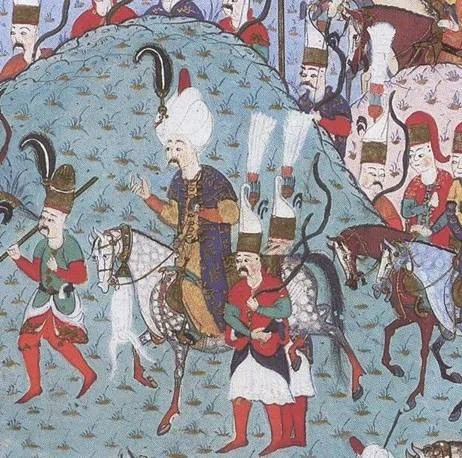

Чтобы наглядней представить дальнейший ход событий во время осады Родоса, напомним основные географические характеристики острова. Формой он напоминает эллипс с большой осью направленной с юго-запада на северо-восток. В районе его центральной части находилась группа господствующих над островом высот, самая высокая из которых поднималась на 1300 м над уровнем моря. Единственным крупным поселением в то время на острове был город Родос, расположенный примерно в трех километрах от крайней северной точки острова и на кратчайшем расстоянии от материковой части Турции. Построенные вокруг него стены и башни были, пожалуй, самой мощной крепостью начала шестнадцатого века. Кроме Родоса на острове было еще 17 небольших укрепленных замков вдоль береговой линии, однако они не могли держать самостоятельной обороны в случае падения Родоса.
Когда осада стала неизбежной, госпитальеры начали последний этап подготовки к ней. Все здания за пределами городских стен были снесены до основания, их жители с запасами продовольствия переселены в город. Три четверти всех рабов, находящихся в частной собственности жителей острова, решением Совета ордена были реквизированы у их хозяев и использовались на работах по совершенствованию укреплений. Были назначены три комиссара по сбору инормации о передвижениях и действиях флота турок через специально созданные отряды местных крестьян, рассредоточенных по всему острову. Все рабы-турки (общим числом 3 тысячи) были закованы в кандалы и отправленные в надежное место, не позволяющее им во время боя переметнуться к своим соплеменникам. Вход в гавань был блокирован массивной цепью. По приказу великого магистра находящиеся там венецианский неф и генуэзская каракка были задержаны вместе с экипажами, о чем магистр сообщил в письме, направленном дожу Венеции 26 июня. В этом же письме де л'Иль Адам пишет, что орден располагает тремя тысячами орудий и запасами пороха, достаточными для того, чтобы производить ежедневно по двадцать пять выстрелов из каждого орудия:
Dize aver 3000 pezi de artelaria e tanta polvere, che fata la descritione potrano trazer 25 bote per artellaria, in modo che aferma sperar di consequir victoria (Sanudo XXXIII 385)
Магистр также сообщает, что имеющихся запасов продовольствия и вина (8000 бочек) хватит на полтора года. Прибывший на Родос известный итальянский военный инженер Gabriel Radin Maranengo (о его вкладе в оборону крепости мы еще поговорим) тщательно измерил все расстояния до естественных ориентиров на местности, что во много обеспечило в дальнейшем поразительную эффективность артиллерийского огня осажденных рыцарей, о которой говорят очевидцы той битвы. С получением первых сигналов о высадке турок Великий магистр отдал приказ о расстановке артиллерии на стенах и бастионах.
Руководство госпитальеров осознавало два слабых звена в подготовке к осаде. Первое – недостаточные запасы пороха и боеприпасов для длительной осады. Второе – отсутствие всякой надежды на помощь извне. Мы уже отмечали, что вражда между императором Карлом V Габсбургом и французским королем Франциском I не позволяла надеяться на действенную поддержку с их стороны. Страшный разгром французов в битве при Бикокке 27 апреля 1522 года вовсе не означал конца войны. Папа Адриан VI, сменивший Льва X, причитал о катастрофическом состоянии своих финансов, хотя и повторял, что он без слез не может говорить о тяжелом положении иоаннитов. На Венецию рассчитывать не приходилось вовсе. Правда, венецианцы сформировали специальную экадру разведывательных кораблей, в задачу которой входило отслеживать обстановку в восточном Средиземноморье. Но капитаны этих кораблей получили строжайшее указание избегать любых действий, которые могли бы раздражать османов. Их главной задачей было понять, не направлены ли действия турок против Кипра. Хорошо об этом сказано у Шекспира:
Здесь уловка,
Чтоб нам отвесть глаза. Когда мы вспомним
Значенье Кипра для державы Турка
И захотим опять-таки понять,
Что он для Турка и важней Родоса
И может быть гораздо легче взят,
Затем что хуже снаряжен для боя
И полностью лишен тех средств, какими
Вооружен Родос;…
Шекспир, Отелло, Акт 1, сц. 3 (перевод М. Лозинского)
Но как только стало ясно, что целью турок действительно является Родос, корабли венецианской эскадры сразу же вернулись на свои базы. Правители европейских держав успокаивали свою совесть, считая, что если Родос уже однажды выдержал осаду турок, он это сделает и в этот раз.
Прошлый раз мы уже отметили, что высадка первых турецких войск на остров началась 24 июня 1522 года. Четыре недели потребовались после этого турецким артиллеристам, чтобы определить наиболее удачные места для размещения батарей осадных орудий. Ни одного выстрела по крепости не было сделано до тех пор, пока 28 июля не остров не переправился Сулейман, встреченный артиллерийским салютом из турецких орудий, находящихся на острове.

Ставка султана разместилась на высоте Сан-Стефано, господствующей над Родосом и прилегающей морской акваторией. До ближайших бастионов крепости от этого места было не более двух километров. Войска Сулеймана заняли предназначенные для них позиции, окружив крепость с южных направлений от моря и до моря. Флот занял позиции в море вокруг острова. 29 июля 1522 года началась осада Родоса, которая продолжалась сто сорок пять дней.